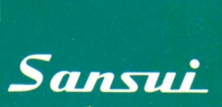
SANSUI（サンスイ）
1944年開設の菊池幸作氏による個人経営の「山水電気製作所」が母体で、1947年に会社組織として創立。トランス製造から始まり、アンプを得意とした日本の音響機器メーカー。1961年に東証二部上場、1970年に一部切替の上場企業であるが、現在ではオーディオメーカーとしてはほぼ活動を停止している（2010/12月期 従業員数 5名(すべて総務・経理部門で技術系社員は0 音響・映像事業の連結売上はなし、損失のみ発生）(*)。
＊その後、2011年には親会社が破綻、2012年に民事再生法の適用を申請、2014年には破産手続が開始され、７月に破産した。また「ドウシシャ」という企業が2012年より「SANSUIブランド」を使用している。
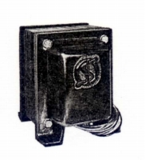
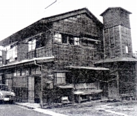
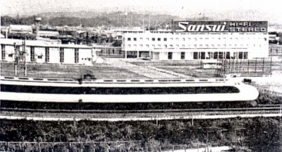
（左から 初期のトランス 創立当初の本社社屋、創立時の従業員は10名だった。 1969年完成の3万坪の敷地を誇った静岡事業所）
オーディオメーカーとして、盛時には得意としていたアンプ以外にも各種のコンポーネントを製造しており、自社ブランドのヘッドフォンも用意していた。最初のヘッドフォンは1966年7月発売のSS-1であり、1973年の時点で早くもオープンエア型を揃え、他社と比較しても見劣りしないラインナップだった。しかし70年代後半のモデル(SS-30,40,60,80)は時流に逆行したような古めかしいデザインで、短命に終わった。1981年には小型・軽量タイプ1モデルとなり、80年代末に同社のヘッドフォンは姿を消した。なお1980年代の製品ラインをしぼった時期には、「コス」の輸入代理店となっていたため、当時の同社の総合カタログには自社のものではなく、コスのヘッドフォンを掲載していた時期もある。
�T.SSシリーズ
�@〜1970年代前半のモデル
古典的な密閉型と動電全面駆動型モデルのグループ。SS-1、2は1960年代発売の古典的な機種。SS-10、20は1970年代初頭の高級機にしばしばみられた2ウェイ型モデルで、特にSS-10は珍しいメカニカル・2ウェイ型。
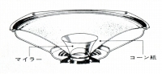
SS-1 SS-2
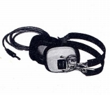
(SS-2)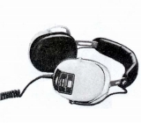
(SS-10)（動電全面駆動型） SS-100
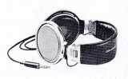
＊海外サイトではSS-L15という動電全面駆動型の画像を見ることができる。どこかテクニカのATH-2を思わせる機種だった。一方SS-100については海外サイトでみたカタログ画像ではビクターの動電全面駆動型の資料と共通性が高い印象を受けた。
�A1970年代後半のモデル
無骨なデサインのセミオープンタイプ。
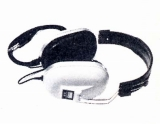 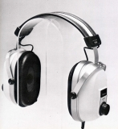
＊SS-1についてイベントで撮影した画像を使用しました。撮影及び掲載をご許可いただき、ありがとうございました。
�U.SHシリーズ
当時としては軽快なデザインだったオープンエア型モデル。内容も先進的で1973年当時で背面開放であるだけではなく、ベロシティ型の20�o径のユニットを使用していた。
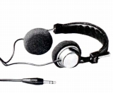 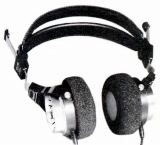
＊SH-15について豊永尚輝 氏所有機の画像を使用しました。ありがとうございます。
�V.その他
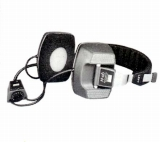
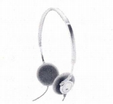
（左 QH-44 右 MS-7)